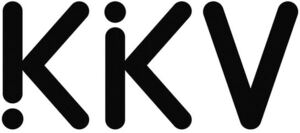

Trade Mark Journal No.2025/050 12 December 2025
WO0000001887254 (1,3,4,5,7,8,9,10,11,16,18,20,22,24,25,26,27,28,29,30,31,32)
Office of origin: China
Date of International Registration:27 May 2025
Date of designation in the UK:
27 May 2025

International priority date claimed: 17 February 2025
(China)
(83485883)
International priority date claimed: 1 April 2025
(China)
(84422576)
International priority date claimed: 1 April 2025
(China)
(84423011)
International priority date claimed: 1 April 2025
(China)
(84431211)
International priority date claimed: 1 April 2025
(China)
(84434484)
International priority date claimed: 1 April 2025
(China)
(84434999)
International priority date claimed: 1 April 2025
(China)
(84437522)
International priority date claimed: 1 April 2025
(China)
(84439540)
International priority date claimed: 1 April 2025
(China)
(84440029)
International priority date claimed: 1 April 2025
(China)
(84443632)
International priority date claimed: 8 April 2025
(China)
(84571155)
International priority date claimed: 6 May 2025
(China)
(85106921)
- Class 1
- Desiccants; kieselgur; vinic alcohol; fulling preparations; disincrustants; wallpaper removing preparations; activated carbon; flower preservatives; photographic paper; fertilizers; soil for growing; fireproofing preparations; cement for footwear; paper pulp; adhesives for paperhanging; oils for currying leather; antifreeze.
- Class 3
- Cakes of toilet soap; bath salts; toiletry preparations; cleaning preparations; polishing preparations; smoothing stones; deodorants for pets; air fragrance reed diffusers; essential oils; cotton wool impregnated with make-up removing preparations; beauty masks; perfumes; false eyelashes; cosmetics; mouthwashes, not for medical purposes; toothpaste; fragrances; incense sachets; incense.
- Class 4
- Candles; perfumed candles; lamp wicks; wicks for candles; dust removing preparations; wax [raw material]; firelighters; fuel; lighting fuel; lubricating oil; firewood.
- Class 5
- Adhesive patches for medical purposes; contact lens cleaning preparations; food for babies; animal washes [insecticides]; diapers for pets; medical dressings; eyepatches for medical purposes; sanitary tampons; dental abrasives.
- Class 7
- Mixing machines; bread cutting machines; peeling machines; ironing machines; sewing machines; packing machines; meat choppers, electric; dishwashing machines; coffee grinders, other than hand-operated; pepper mills, other than hand-operated; tin openers, electric; kitchen machines, electric; whisks, electric, for household purposes; food processors, electric; vegetable slicers, electric; cheese slicers, electric; scissors, electric; hand-held tools, other than hand-operated; nail extractors, electric; screwdrivers, electric; spray guns for paint; machines and apparatus for cleaning, electric; cleaning appliances utilizing steam; vacuum cleaners; steam mops; labellers [machines]; curtain drawing devices, electrically operated; racket stringing machines.
- Class 8
- Hand tools, hand-operated; mallets [hand instruments]; tweezers; scissors; agricultural implements, hand-operated; garden tools, hand-operated; nail clippers, electric or non-electric; ladles [hand tools]; table cutlery [knives, forks and spoons]; pedicure sets; manicure sets; razors, electric; depilation appliances, electric and non-electric; hair clippers for personal use, electric and non-electric; nail files, electric; nail files; fingernail polishers, electric or non-electric; eyelash curlers; hobby knives [scalpels]; knives; razor knives; beard clippers; hand implements for hair curling.
- Class 9
- Computer programs, recorded; computer peripheral devices; computer keyboards; mouse pads; screen protectors for mobile telephones; earphones; spectacles; portable power chargers; chargers for mobile telephones; mobile power supply [rechargeable batteries]; time recording apparatus; bathroom scales; measures; protective films adapted for mobile telephone screens; ring stands for mobile telephones; cases for smartphones; fisheye lenses for cameras; selfie sticks [hand-held monopods]; measuring instruments; USB cables.
- Class 10
- Sanitary masks; spoons for administering medicine; gloves for massage; ear plugs [hearing protection devices]; menstrual cups; cooling patches for medical purposes; pill crushers; face masks for medical purposes; massage apparatus; thermometers for medical purposes; dental apparatus and instruments; heating cushions, electric, for medical purposes; feeding bottles; sex toys; hair prostheses; orthopaedic articles; thread, surgical; disposable steam-heated patches for therapeutic purposes; condoms; thread for medical purposes; tongue scrapers; needles for medical purposes.
- Class 11
- Lamps; lanterns for lighting; germicidal lamps for purifying air; USB-powered cup heaters; refrigerating apparatus and machines; humidifiers; hair dryers; heating apparatus, electric; bath fittings; pocket warmers.
- Class 16
- Paper; toilet paper; advertisement boards of paper or cardboard; envelopes [stationery]; printed publications; bags [envelopes, pouches] of paper or plastics, for packaging; wrapping paper; stationery; writing instruments; gummed tape [stationery].
- Class 18
- Leather, unworked or semi-worked; wallets; vanity cases, not fitted; grips for holding shopping bags; travelling cases; carrying bags; bags for sports; luggage tags; suitcase packing organizers; bags; reusable shopping bags; trunks [luggage]; bags [envelopes, pouches] of leather, for packaging; compression cubes adapted for luggage; umbrellas; walking sticks; mountaineering sticks; clothing for pets; harness for animals; collars for animals; leather leashes.
- Class 20
- Furniture; packaging containers of plastic; clips of plastic for sealing bags; split rings, not of metal, for keys; mirrors [looking glasses]; works of art of bamboo; statuettes of resin; coathooks, not of metal; bolsters; works of art of wood.
- Class 22
- Packing strings of plastic; ropes; plastic ties for garden use; packing rope; ropes, not of metal; mesh bags for washing laundry; nets; hammocks; tents; dust sheets; vehicle covers, not fitted; tarpaulins of sailcloth; cloth bags specially adapted for the storage of diapers; laundry bags; bags [envelopes, pouches] of textile, for packaging; packing [cushioning, stuffing] materials, not of rubber, plastics, paper or cardboard; grasses for upholstering; down [feathers]; raw or treated wool; raw cotton; carbon fibres for textile use; textile fibres; raw fibrous textile.
- Class 24
- Upholstery fabrics; gummed cloth, other than for stationery purposes; wall hangings of textile; felt; household linen; towels of textile; bed linen; furniture coverings of plastic; fitted toilet lid covers of fabric.
- Class 25
- Tops [clothing]; underwear; trousers; layettes [clothing]; raincoats; costumes for use in role-playing games; shoes; hats; hosiery; gloves [clothing]; scarves; shower caps; sleep masks.
- Class 26
- Hair bands; hair curling pins; hair grips; hair barrettes; false hair; wigs; needles; artificial bonsai trees; artificial flowers; shoulder pads for clothing.
- Class 27
- Carpets; mats; floor mats; bath mats; yoga mats; wallpaper; non-slip mats; carpets for automobiles; gymnastic mats; textile wallcoverings.
- Class 28
- Apparatus for games; toys; table-top games; balls for games; dumb-bells; bows for archery; machines for physical exercises; jump ropes; gloves for games; fishing tackle; scale model vehicles; scale model kits [toys]; dolls; building blocks [toys]; trading cards for games; body building equipment [physical exercise]; Christmas trees of synthetic material; scratch cards for playing lottery games.
- Class 29
- Processed meat products; meat; fish-based snack food; fruits, tinned; fruit-based snack food; vegetable-based snack food; freeze-dried vegetables; milk; nuts, prepared; dried mushrooms; jerky; meat, tinned; vegetables, preserved; cheese.
- Class 30
- Coffee; tea; tea-based beverages; sweets; cereal-based snack food; corn flakes; biscuits; instant rice; cereal preparations; instant noodles; shrimp chips; seasonings.
- Class 31
- Plants; grains [cereals]; flowers, natural; flowers, dried, for decoration; hay; plants, dried, for decoration; garden herbs, fresh; live animals; beet, fresh; fruit, fresh; edible flowers, fresh; seeds for planting; animal foodstuffs; fodder; pet food; litter for animals; sanded paper [litter] for pets; aromatic sand [litter] for pets; beverages for pets.
- Class 32
- Non-alcoholic beer; beer-based cocktails; beer; barley wine [beer]; fruit-based beer; craft beer; malt beer; preparations for making non-alcoholic beverages; preparations for making carbonated water; syrups for beverages.
Guangdong Kuaike E-commerce Co., Ltd.
Representative: Chofn Intellectual Property, 1217, Zuoan Gongshe Plaza 12th Floor, , 68 North Fourth Ring Road W.,, Haidian, 100080 Beijing, CHINA